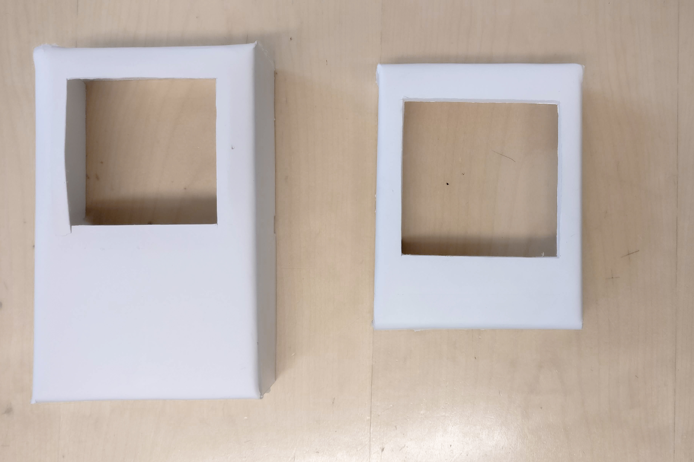
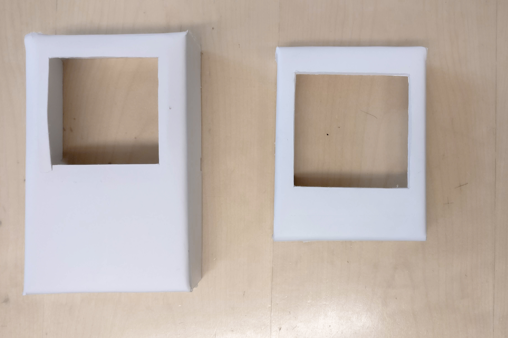

POLA
Pola is an interactive photo frame inspired by vintage polariod photos, the inaccessibility of modern online-photo storage and the slow design philosophy. It works by displaying a photograph from an online collection on its screen for a couple of days before fading the photo to black. When the owner notices the faded-out frame, they have to shake the frame to make a new photograph appear. By this interaction, a short moment of conscious interaction with the technology is created, before ultimately making it fade into the background again.
This project began as a group project at Chalmers University of Technology. I am currently continuing the project with the aim of creating a viable research product fit for a cultural probe-study.
Context: Chalmers University of Technology; Master Programme in Interaction Design & Technology; Course: Tangible Interaction; Group project with Daniel Duvanå, Julia Wallén and Yibin Huai.
My part: Concept, Research, Prototyping, Programming, Evaluation, Continued work
Challenge
The initial challenge for Pola was to design an artefact that would repeatedly break down and be in need of repair by its owner. We quickly decided to work with a more reflective design approach, and explore ways to work with slow technology in the home environment.

Ideation and explorative research
By conducting interviews and home-visits, we learned that people most often choose to repair things for two different reasons: Because the thing that broke is expensive, or because it has a nostalgic value. Nostalgic and sentimental objects are often things like notebooks, gifts or photographs.


"We have probably stopped noticing the pictures. I usually just pick them up when they fall down. When people are visiting, they go straight for them. I actively look at the pictures when putting them back up."
The home-visits introduced us to an interesting scenario: Two participants described how they would often forget that they had pictures on their walls, as these tended to fade into the background over time. Occasionally, their photographs would fall down from the wall. When this happened, the participants would often take a moment to truly look at the photo while putting it back up.
This lead us to a general concept in which a tangible photo-frame would indicate that it had been forgotten over time. After being forgotten, it should allow for a reflective moment while the user took time to interact with the object, thereby remembering it.

Further fine-tuning of the concept lead us to adapt the symbolic representation of old photographs in several aspects. When being "forgotten", the photo-fram will fade away to nothing. To be remembered, the photo requires a shake, similar to shaking a polaroid to make it fade into view.

Prototyping
An initial technical test was conducted with an arduino mini, a led light and an IMU sensor, to explore the possibilities of the interaction.
The final prototype was constructed with a Raspberry Pi 4, a hyperpixel screen-hat and an IMU sensor. The entire prototype was built in Pyhton.

 
